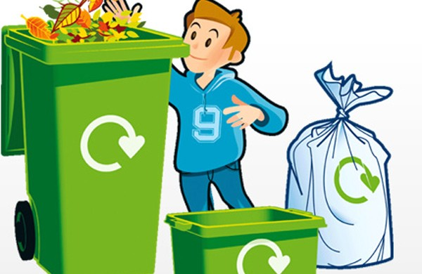

La ley de las 3R
El reciclaje es un proceso cuyo objetivo es convertir desechos en nuevos productos o en materia prima para su posterior utilización.
Gracias al reciclaje se previene el desuso de materiales potencialmente útiles, se reduce el consumo de nueva materia prima, además de reducir el uso de energía, la contaminación del aire (a través de la incineración) y del agua (a través de los vertederos),
así como también disminuir las emisiones de gases de efecto invernadero en comparación con la producción de plásticos.
El reciclaje es un componente clave en la reducción de desechos contemporáneos y es el tercer componente de las 3R («Reducir, Reutilizar y Reciclar»).
Los materiales reciclables son muchos, e incluyen todo el papel y cartón, el vidrio, los metales ferrosos y no ferrosos, algunos plásticos, telas y textiles, maderas y componentes electrónicos.
En otros casos no es posible llevar a cabo un reciclaje debido a la dificultad técnica o alto coste del proceso,
de modo que suele reutilizarse el material o los productos para producir otros materiales y se destinan a otras finalidades, como el aprovechamiento energético.
Lugares de Reciclaje
